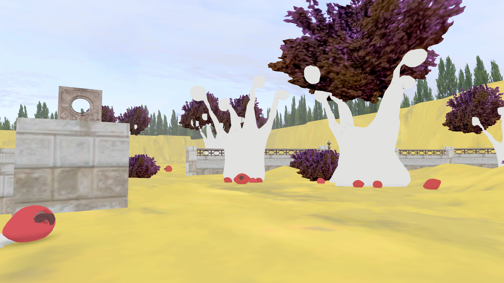
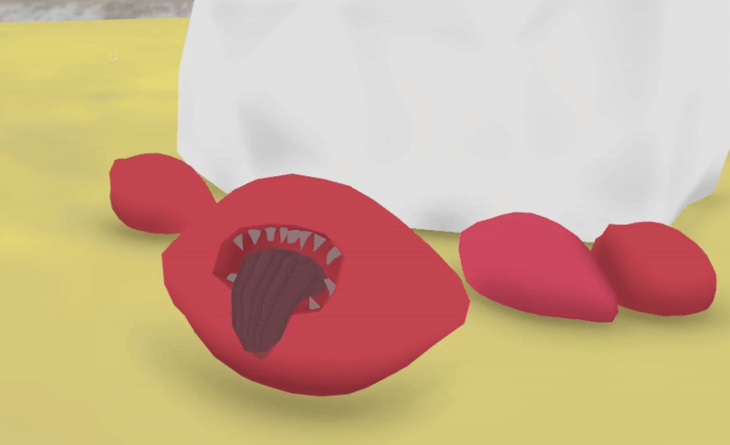
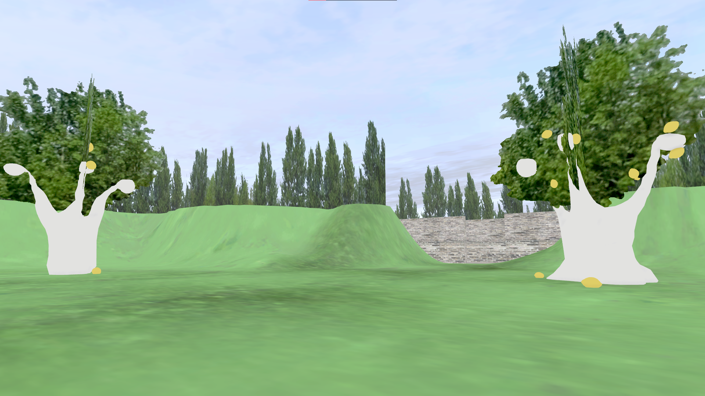
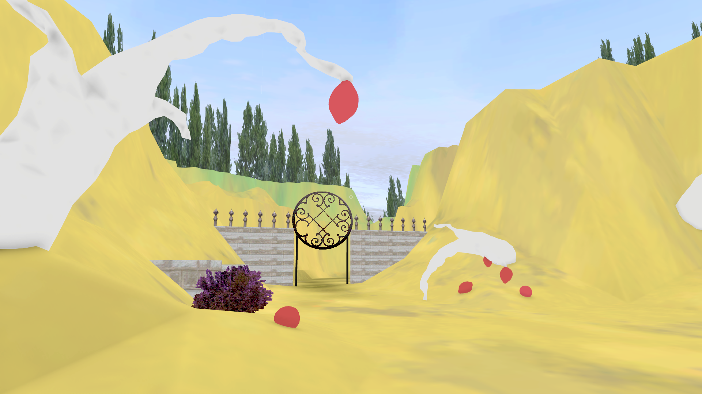

Lemon Orchard






Overview
This is a project I made in 10 days for Orceard Jam, which is my first attempt at hosting a jam. I tried marketing the jam on reddit and itch, which is where it was hosted.
The whole idea of the jam revolves around environments and level design, which is probably my biggest area of interest. The theme for the first edition was "lemon orchard". I got over 30 people from around the world interested and, in the end, a total of 8 submissions.
Lemon Orchard was ultimately more of a practice ground for me when it came to animations and music. It's only an atmospheric short experience in a PSX style, a walking sim, but it might become more in the future.
Role and Contributions
This was a solo project, so there were no specific roles here. I did, however, take it upon myself to learn a lot of new things: I got more familiar with Unity and scripting, as well as creating my first two ambient pieces made with a synth keyboard. The synth keys were self-made as well.
I also got to know more about creating animations in Blender for Unity. Everything used in the project is made by me, apart from the PSX shader.
Engine and Tools
Unity, Photoshop, Gimp, Blender, Audacity, FL Studio 2024, Vital